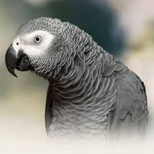
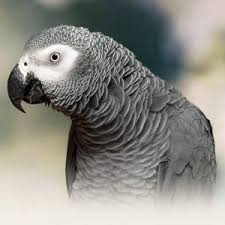

Home
Produk
Contact
Kategori Produk Burung Paruh Bengkok :
Sun Conure
Sun Conure Baby: Rp 2.500.000,-
Sun Conure Dewasa : Rp. 4.000.000,-
Burung paruh bengkok berukuran kecil. Burung ini sangat cocok untuk anda sebagai pemula yang ingin mencoba memelihara burung, salah satu yang parrot south jakarta tawarkan untuk sobat yaitu sun conure, sun conure merupakan burung import yang berasal dari amerika latin, sun conure memiliki jangka hidup bisa mencapai 15 tahun. Perawatan sun conure sangat mudah, cukup diberi jagung, kuaci dan air bersih yang disediakan dan di ganti setiap hari.
African Grey
African Grey Baby : 7.500.000,-
African Grey Dewasa : 10.000.000,-
Burung paruh bengkok berukuran medium. Burung ini pintar dan dapat menirukan beberapa jenis suara, bahkan bisa kita latih untuk membuat script percakapan, burung ini memiliki tingkat bonding yang tinggi terhadap owner nya, perawatan burung ini tentu saja mudah, cukup diberikan kuaci dan jagung serta air minum yang bersih
Blue and Gold Macaw
BnG Macaw Baby : 20.000.000,-
BnG Macaw Dewasa : 30.000.000,-
Blue and Gold Macaw, Burung paruh bengkok berukuran besar memiliki karakter yang friendly sehingga aman untuk anak anak, burung ini bisa diajarkan berbicara dan sangat cocok untuk dilatih freefligth. usia burung macaw bisa mencapai 30 tahun, masalah perawatan burung macaw sama seperti merawat afgrey dan sun conure.
Small, Medium and Large Parrot
 
